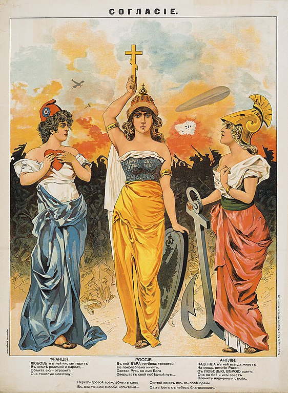

The First World War

EN
The First World War
EN
The First Ever Global War
Queen Victoria's death corresponded with the start of the new century and, as Britain moved away from probably the most glorious period in its history. Britain entered a new era in which its supremacy on the world stage would come to an end as the result of two global wars. Queen Victoria had been a symbol of the values, the greatness and the weaknesses of the age. On the Queen's death, her son Edward VII came to the throne and he ruled to 1910. His age can be seen as a period of social changes.  Edwardian age saw a strong indusrialization and increasing of population.
Edwardian age saw a strong indusrialization and increasing of population.
During his reign there were several important reforms, which he made. The first one was in 1902 when the Education Act was passed. This was the first step towards a system of free and compulsory school education for all children until fifteen. Another important reform was in 1908 when the old age pensions scheme started. The Act provided for a non-contributory old age pension for people over the age of seventy, with the cost being borne by taxpayers generally. And finally in 1909 Labour Exchanges or government offices were opened in which unemployed people could go looking for a work. This managed to reduce the unemployment in UK and helped loads of people to find a job and have a better life. Edward VII died in 1910 and his son George V came to the throne as his reign continued to 1936. His reign is often connected with the horrors of the war years (1914-1918) and the sense of disillusionment that followed that confict.
Britain's foreign policy
In the last decades of the 19th century, England's foreign policy had been one of 'splendid isolation'. During this 'isolation' Britain managed to develop frendly relations with the United States. In the early Europe was divided between France and Russia on one side, Germany, Austria and Italy on the other. After the turn of the century, Britain became concerned about the expansion of the German Empire. Britain and France even, both frightened by Germany, decided to sign a treaty of friendship. Later on this agreement became the Triple Entente when Russia joined it. The impact of the Triple Entente was to improve British relations with France and its ally Russia and to demote the importance to Britain of good relations with Germany. After 1905, foreign policy was tightly controlled by the Liberal foreign minister Edward Grey.
The Triple Entente was opposed by the Triple Alliance of Germany, Austria and Italy. The Entente, in contrast to the Triple Alliance, was not an alliance of mutual defence and Britain therefore felt free to make her own foreign policy decisions in 1914. The Liberal party members were highly pacifistic and moralistic, and by 1914 they have been increasingly convinced that German aggression violated international norms, and specifically that a German invasion of neutral Belgium was completely immoral. However the all-Liberal British cabinet decided on July 29, 1914, that being a signatory to the 1839 treaty about Belgium did not obligate it to oppose a German invasion of Belgium with military force. But after a few days on 4th August 1914, Britain declared a war to Germany and enterded the First World War.
Developer
Miroslav Mihaylov
Email: miro7543@gmail.com
Phone: +359-98-823-1814
Address: Veliko Tarnovo, Bulgaria
Developer
Petar Nedyalkov
Email: miro7543@gmail.com
Phone: +359-98-823-1814
Address: Veliko Tarnovo, Bulgaria
Help
Support
About us
Contact us
©All rights reserved 2021